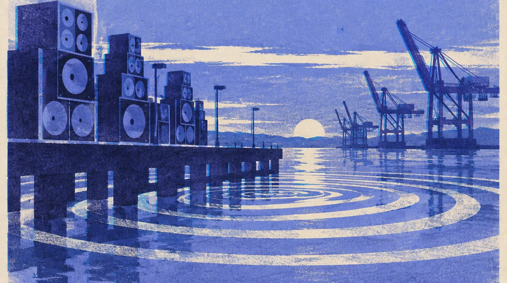

MUSIC · SEP 26 · San Francisco
PORTOLA
Different crowds. The same instinct to find each other.
3 days out
- When
- Sat Sep 26, 2026
- Where
- Pier 80, San Francisco
- Doors
- 1 PM, Pier 80, 21+. Full Saturday grid below, from the festival's official set-times image.
- Sources
- Portola official set times
Build our Saturday
The official Saturday grid, five stages. Tap sets to star them; clashes light up red. Starred to start: Oskar Med K, Robyn, Dog Blood.
1 PM2 PM3 PM4 PM5 PM6 PM7 PM8 PM9 PM10 PM
Pier Stage
Crane Stage
Warehouse
Ship Tent
Despacio
Full Saturday grid as text
- Pier Stage: Airwolf Paradise 1:30 to 2:30; Gelli Haha 2:40 to 3:30; Oskar Med K 3:40 to 4:30; Fcukers 4:40 to 5:30; Tove Lo 5:40 to 6:30; Robyn 7:10 to 8:10; Dog Blood (Skrillex + Boys Noize) 9:00 to 10:15
- Crane Stage: Erika b2b SFCowboy 1:30 to 3:10; Tricky 3:30 to 4:30; Nimino 4:50 to 5:50; DJ Shadow: 30 years of Endtroducing 6:10 to 7:10; Fatboy Slim 7:55 to 9:25; Soulwax 9:55 to 10:55
- Warehouse: Sam Alfred 1:30 to 2:45; Ranger Trucco b2b Alisha 2:45 to 3:45; Chloé Caillet 3:45 to 4:45; Groove Armada 4:45 to 6:00; Max Styler 6:00 to 7:15; Kettama 7:15 to 8:30; Beltran b2b Ben Sterling 8:30 to 9:45; Prospa 9:45 to 11:00
- Ship Tent: Felly Fell 1:40 to 2:40; Mgna Crrrta 2:50 to 3:30; Six Sex 3:40 to 4:20; Mike D 5D 4:40 to 5:30; Jyoty 5:40 to 6:40; Bassvictim 6:50 to 7:40; Jigitz 7:50 to 8:40; Nate Sib 8:55 to 9:35; Melanie C (DJ set) 9:50 to 10:30
- Despacio: Despacio 2:45 to 9:45
Despacio runs 2:45 to 9:45. Doors 1 PM. 21+.
Before we go
Dog BloodTurn Off the LightsSKRILLEX + BOYS NOIZE · OFFICIAL TRACKPortola Party PeopleFind our next discoveryTHE FESTIVAL’S OFFICIAL PLAYLIST
Artist recordings open on their own players. Not a promised setlist.